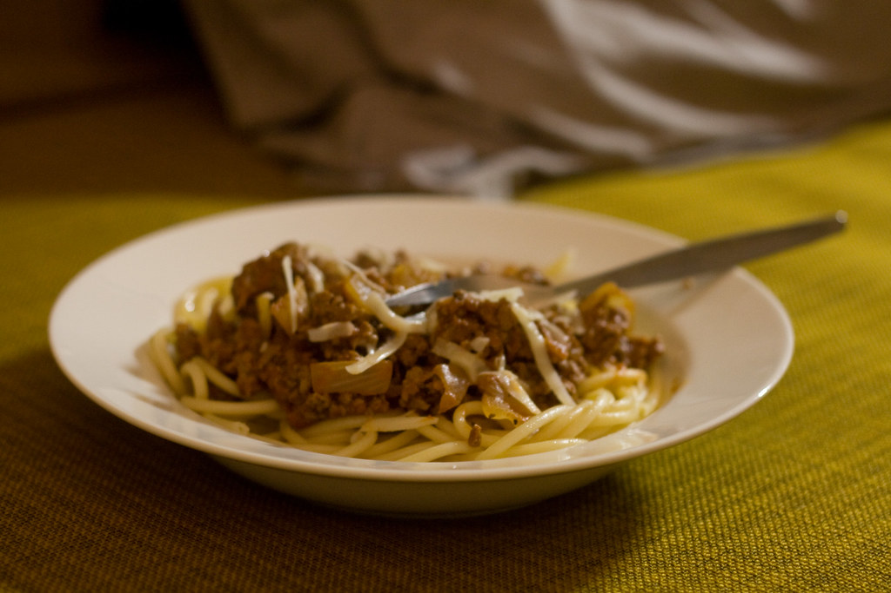

Home
Spag Bol

Description
A rich, delicious, traditional spaghetti bolognese
that will really impress your partner!
So simple yet so yummy!
Ingredients
-
4 tablespoons olive oil
-
6 large onions, sliced
-
6 cloves garlic, chopped
-
2 red bell pepper, chopped
-
4 pounds lean ground beef
-
2 cups beef broth
-
4 (14 ounce) cans peeled and diced tomatoes with juice
-
2 cups red wine
-
2 (6 ounce) can tomato paste
-
2 stalk celery, chopped
-
4 bay leaves
-
2 tablespoons Italian seasoning
Steps
-
Heat olive oil in a large skillet over medium heat.
Saute onions and garlic until onions are tender.
Stir in red bell pepper and saute 2 minutes.
-
Place ground beef in the skillet and cook over medium high heat until evenly brown.
Stir in beef broth,
diced tomatoes, wine and tomato paste. Bring to a boil and add celery,
bay leaves and Italian seasoning.
-
Reduce heat and simmer for 1 hour,
or until sauce thickens.